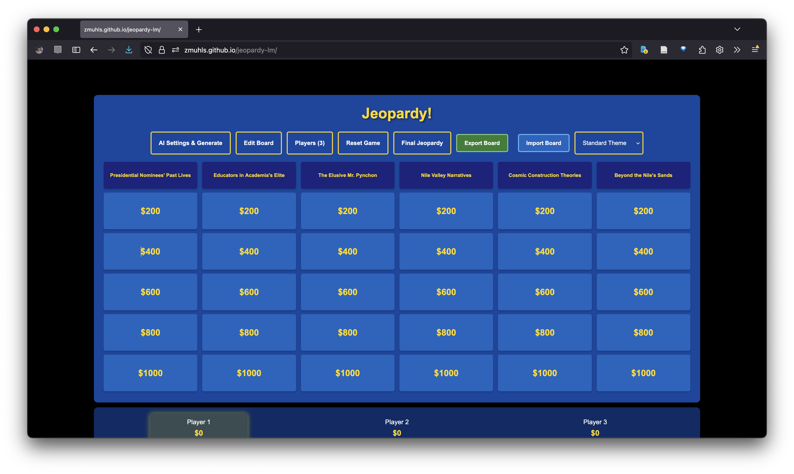

Thursday, October 16
Facilitated by Zach Muhlbauer
Teaching and Learning Center | Interactive Technology & Pedagogy Lab
Please share with the group:
Game mechanics serve as analytical scaffolds that reveal AI limitations in situ.
Example: When Chess.com blogger "Nightly-Knight" played against ChatGPT, it repeatedly made illegal moves—including attempting to move a pawn horizontally to capture (pawns can only capture diagonally). ChatGPT "forgets the position of the game" and makes moves that violate basic chess rules rather than accepting disadvantageous positions.
This interactive Jeopardy! emulator allows you to input custom categories and witness the LLM generate clues in real-time, exposing how it handles knowledge at different difficulty levels and revealing confabulation patterns when pushed beyond its training data.
The format requires the LLM to generate:
This makes confabulation immediately visible when it fails.
We'll test three category types to progressively stress the model's knowledge boundaries:
Respond in chat:
What did you notice from the Jeopardy board demonstration? What was most striking?
What games offer similar affordances in their ability to expose a large language model for the bullshit machine that it is?
Mary Flanagan's "critical play" uses game design to challenge conventions and reveal hidden systems. We apply this iterative design model to expose AI limitations through playful constraints.
Traditional iterative game design model:
Interrogating AI: Characterizing emergent playful interactions with ChatGPT (via r/ChatGPT)
| Type | What it does | Try this |
|---|---|---|
| Reflecting | Prompting AI to self-represent and express "opinions" | Ask about self-understanding |
| Jesting | Generating humor and nonsensical exchanges | Request absurd combinations |
| Imitating | Requesting persona or character mimicry | Ask it to role-play |
| Challenging | Testing capabilities until failure | Push logical limits |
| Tricking | Attempting deception/boundary bypassing | Try jailbreak techniques |
| Contriving | Creating impossible or fabricated content | Request non-existent things |
LLMs generate responses through vector similarity: finding statistically likely associations from training data. When given "teacher," the model maps to nearby concepts in semantic space: "classroom," "student," "education."
But what happens when we constrain these associations through game rules? Can we force semantic breakdown by limiting the model's ability to select from its most probable outputs?
"You are participating in a game of Exquisite Corpse. Respond only to the user's most recent word. Reply with exactly one word per turn, with no punctuation or commentary, and label your response in sequence (Turn 2, Turn 3, etc.). Continue this pattern until Turn 20. When that occurs, stop producing numbered turns and compose a short poem using only the words that appeared in this conversation: nothing added, removed, or borrowed from elsewhere. Arrange them with line breaks and spacing to create a cohesive poem, then ask if the user would like a close reading of it."
Use this worksheet to design a game that reveals AI limitations using 2-3 types of playful interactions
Choose 2-3 game formats that might be interesting to combine or explore:
Select which AI weakness(es) you want to expose:
Example: Sycophancy - Tell the AI an obviously false "fact" and ask it to explain why it's true. AI often agrees with incorrect user statements rather than challenging them.
System prompt: Configure the AI's behavior and constraints
Example: "We're playing Mad Libs. I'll give you a sentence with blanks labeled with parts of speech. For each blank, provide two options: (1) a probable word that fits the context, and (2) a statistically improbable word that still matches the part of speech but disrupts semantic coherence. Label them clearly."
User prompt: Your first message to start the game
Example: "The [adjective] teacher walked into the [noun] and began to [verb]."
What do you want to reveal about AI abilities/limitations?
What do you predict will happen? What failure modes might emerge? How will game mechanics make limitations visible?
Navigate to the Open WebUI demo site and sign up: https://openwebui.cuny.qzz.io/
Test your game design:
Share what you discover about the AI's limitations